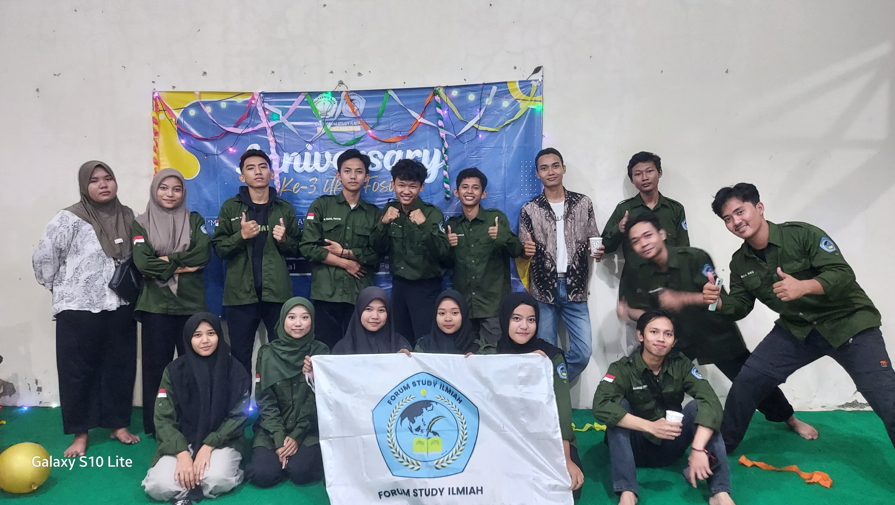

Forum Studi Ilmiah
Unit Kegiatan Mahasiswa Forum Studi Ilmiah (UKM FOSIL) Politeknik Baja Tegal resmi berdiri pada 13 Februari 2022. Ukm Fosil merupakan wadah bagi mahasiswa untuk belajar di luar akademik, dengan fokus utama pada penelitian dan pengembangan ilmiah. Ukm Fosil hadir untuk mendorong mahasiswa berpikir kritis, inovatif, dan kreatif, serta sebagai sarana untuk mengembangkan potensi akademik dan keilmuan mahasiswa.
Visi
Menjadi pusat pengembangan intelektual mahasiswa Politeknik Baja Tegal yang mampu melahirkan generasi ilmiah dengan berpikir kritis, inovatif, dan kreatif melalui kegiatan penelitian dan pengabdian masyarakat.